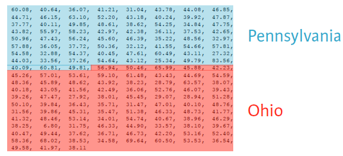
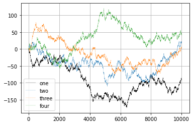
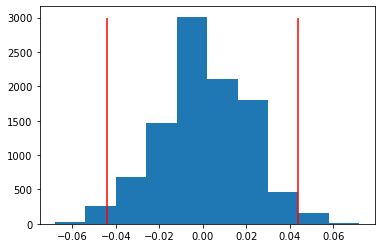

%run ./ourFunctions.py
%precision 3'%.3f'Importing Our Functions
%run ./ourFunctions.py
%precision 3'%.3f'# %load ../ourFunctions.py
import numpy as np
import matplotlib as matplt
import matplotlib.pyplot as plt
import pandas as pd
import seaborn as sns
from scipy.stats import norm
from scipy import stats
from numpy import random
#random.seed(42)We have used the bootstrap to compare two sets of data, both of which are samples. In particular, we can test two-sample hypotheses such as
\(H_0: \mu_m = \mu_f, H_A: \mu_m \neq \mu_f\)
or the one-sided versions:
\(H_0: \mu_m = \mu_f, H_A: \mu_m > \mu_f\)
\(H_0: \mu_m = \mu_f, H_A: \mu_m < \mu_f\)
Another way to compare 2 distributions (in some ways much more straightforward than the bootstrap) is permutation sampling. It directly simulates the hypothesis that two variables have identical probability distributions.
A permutation sample of two arrays having respectively \(n_1\) and \(n_2\) entries is constructed by concatenating the arrays together, scrambling the contents of the concatenated array, and then taking the first \(n_1\) entries as the permutation sample of the first array and the last \(n_2\) entries as the permutation sample of the second array.
At DataCamp the first example offers a nice visualization of this process:

Take a look at the code in ourFunctions.py to run a permutation test
Let us apply our first permutation sampling on the Titanic data. (First, we explore the data a bit)
titanic = sns.load_dataset('titanic')
titanic.head()| survived | pclass | sex | age | sibsp | parch | fare | embarked | class | who | adult_male | deck | embark_town | alive | alone | |
|---|---|---|---|---|---|---|---|---|---|---|---|---|---|---|---|
| 0 | 0 | 3 | male | 22.0 | 1 | 0 | 7.2500 | S | Third | man | True | NaN | Southampton | no | False |
| 1 | 1 | 1 | female | 38.0 | 1 | 0 | 71.2833 | C | First | woman | False | C | Cherbourg | yes | False |
| 2 | 1 | 3 | female | 26.0 | 0 | 0 | 7.9250 | S | Third | woman | False | NaN | Southampton | yes | True |
| 3 | 1 | 1 | female | 35.0 | 1 | 0 | 53.1000 | S | First | woman | False | C | Southampton | yes | False |
| 4 | 0 | 3 | male | 35.0 | 0 | 0 | 8.0500 | S | Third | man | True | NaN | Southampton | no | True |
PclassSurv = titanic.groupby(['pclass', 'survived'])
PclassSurv.size()pclass survived
1 0 80
1 136
2 0 97
1 87
3 0 372
1 119
dtype: int64pd.crosstab(titanic.pclass, titanic.survived,margins=True)| survived | 0 | 1 | All |
|---|---|---|---|
| pclass | |||
| 1 | 80 | 136 | 216 |
| 2 | 97 | 87 | 184 |
| 3 | 372 | 119 | 491 |
| All | 549 | 342 | 891 |
WomenOnly = titanic[titanic["sex"]=="female"]
pd.crosstab(WomenOnly.pclass, WomenOnly.survived,margins=True)| survived | 0 | 1 | All |
|---|---|---|---|
| pclass | |||
| 1 | 3 | 91 | 94 |
| 2 | 6 | 70 | 76 |
| 3 | 72 | 72 | 144 |
| All | 81 | 233 | 314 |
Test the claim that the survival chances of women in 1st and 2nd class were pretty much the same.
We could choose alpha = 0.05, but keep in mind the following - would you step into a plane that has a 5% crash probability ? - Would you buy a drug that has a 5% chance of severe side effects ?
What is the difference between these two methods (bootstrap, permutation) ?
Testing the hypothesis that two samples have the same distribution may be done with a bootstrap test, but a permutation test is preferred because it is more accurate (exact, in fact). But a permutation test is not as versatile as the bootstrap.
We often want to test the hypothesis that population A and population B have the same mean, but not necessarily the same distribution. This is difficult with a permutation test as it assumes exchangeability.
We will get back to this topic!
Of course there is an equivalent fully parametric 2-sample test, the t-test.
We first read in the The National Survey of Family Growth data from the think stats book.
Look at section 1.7 for a description of the variables.
#preg = pd.read_hdf('data/pregNSFG.h5', 'df')
preg = pd.read_csv('data/pregNSFG.csv.gz', compression='gzip')
#only look at live births
live = preg[preg.outcome == 1]
#define first babies
firsts = live[live.birthord == 1]
#and all others
others = live[live.birthord != 1]tRes = stats.ttest_ind(firsts.prglngth.values, others.prglngth.values)
p = pd.Series([tRes.pvalue,tRes.statistic], index = ['p-value:', 'test statistic:'])
pp-value: 0.167554
test statistic: 1.380215
dtype: float64#ttest_ind often underestimates p for unequal variances:
tRes = stats.ttest_ind(firsts.prglngth.values, others.prglngth.values, equal_var = False)
p = pd.Series([tRes.pvalue,tRes.statistic], index = ['p-value:', 'test statistic:'])
pp-value: 0.168528
test statistic: 1.377059
dtype: float64Can you reproduce the first p-value from the test statistic ?
| ## Random Walks |
|---|
| ### Simulating Many Random Walks at Once |
| If your goal was to simulate many random walks, say 5,000 of them, you can generate all of the random walks with minor modifications to the above code. The numpy.random functions if passed a 2-tuple will generate a 2D array of draws, and we can compute the cumulative sum across the rows to compute all 5,000 random walks in one shot |
| ::: {.cell execution_count=15} |
| ::: {.cell execution_count=16} |
| ::: {.cell-output .cell-output-display execution_count=16} |
| ::: {.cell execution_count=17} ``` {.python .cell-code} nwalks = 5000 nsteps = 10000 steps = random.choice([-1,1], size=(nwalks, nsteps), p=(0.9,0.1)) # 0 or 1 #steps = np.where(draws > 0, 1, 0) #steps = np.where(np.random.rand() <= 0.1,1,-1) |
| walks = steps.cumsum(1) ``` ::: |
| ::: {.cell execution_count=18} |
| ::: {.cell-output .cell-output-display execution_count=18} |
| ::: {.cell execution_count=16} |
| ::: {.cell-output .cell-output-stdout} |
| ::: {.cell execution_count=26} ``` {.python .cell-code} fig = plt.figure() ax = fig.add_subplot(1, 1, 1) |
| ax.plot(walks[1,:], ‘k’, label=‘one’, linewidth=0.25) ax.plot(walks[2,:], label=‘two’, linestyle =‘–’, linewidth=0.25) ax.plot(walks[3,:], label=‘three’, linestyle =‘–’, linewidth=0.25) ax.plot(walks[4,:], label=‘four’, linestyle =‘–’, linewidth=0.25) ax.grid() |
| #a very useless legend just because we can ax.legend(loc=‘best’); ``` |
| ::: {.cell-output .cell-output-display}  ::: ::: |
Compute the variance and/or standard deviation at times \(1000, 4000, 9000\).
print('std_1000:', np.std(walks[:,1000]))
print('std_4000:', np.std(walks[:,4000]))
print('std_9000:', np.std(walks[:,9000]))std_1000: 31.985538009544253
std_4000: 63.65415401998522
std_9000: 95.417731496824Extra Credit
Out of these walks, let’s compute the minimum crossing time to 30 or -30. This is slightly tricky because not all 5,000 of them reach 30. We can check this using the any method.
We can then use this boolean array to select out the rows of walks that actually cross the absolute 30 level and call argmax across axis 1 to get the crossing times:
hits30 = (np.abs(walks) >= 30).any(1)
hits30
hits30.sum() # Number that hit 30 or -30
crossing_times = (np.abs(walks[hits30]) >= 30).argmax(1)
crossing_times.mean()892.4928| ## Tasks |
|---|
| ### Binomial Probability Distribution |
| 1. Explore the binom function from scipy.stats |
| 2. Size matters: insurance company A insures 100 cars, company B 400 cars. The probability of a car being stolen is 10%. Compute the probabilities that more than 15% of the respective fleets are stolen. |
| 4. Faced with a mutliple choice test containing 20 question with 4 choices each you decide in desparation to just guess all answers. What is the probability that you will pass, i.e. get at least 10 correct answers? |
| 5. Think about nonparametric versions of the above answers |
| ::: {.cell execution_count=29} |

What does A/B testing have to do with random walks?
# Construct arrays of data: campaigns A and B
clickthroughA = np.array([True] * 45 + [False] * (500-45))
clickthroughB = np.array([True] * 67 + [False] * (500-67))
obsDiff = np.mean(clickthroughB)-np.mean(clickthroughA)
# Acquire permutation samples: perm_replicates
perm_replicates = draw_perm_reps(clickthroughB, clickthroughA, diff_of_means, 10000)#p-value:
np.mean(perm_replicates >= obsDiff)0.0185# Construct arrays of data: campaigns A and B
clickthroughA = np.array([True] * 45 + [False] * (500-45))
clickthroughB = np.array([True] * 67 + [False] * (500-67))
obsDiff = np.mean(clickthroughB)-np.mean(clickthroughA)
# Acquire permutation samples: perm_replicates
perm_replicates = draw_perm_reps(clickthroughB, clickthroughA, diff_of_means, 10000)
plt.hist(perm_replicates)
plt.vlines(obsDiff,0,3000,colors="red")
plt.vlines(-obsDiff,0,3000, colors="red");